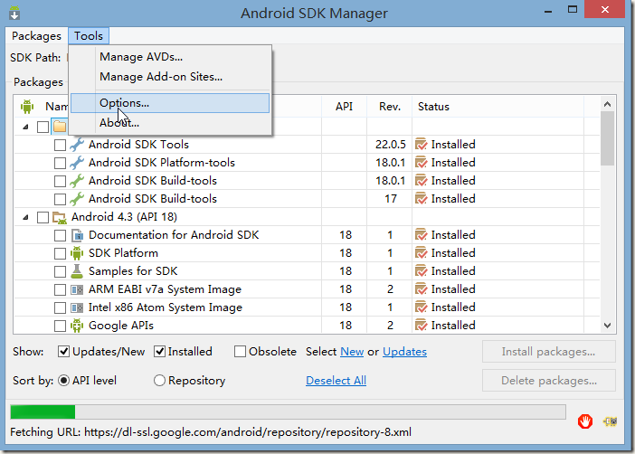
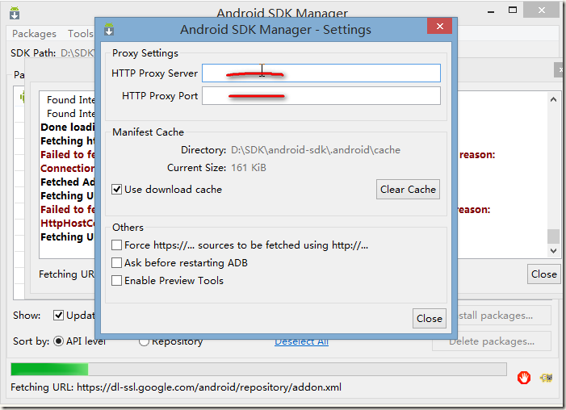

android sdk更新的终极解决方案
由于众所周知的原因，国内更新Android SDK一直是个老大难的事情，一般都要到处找VPN之类的工具来曲线救国。不过其实谷歌已经帮我们想到这点了，我们自身就可以解决问题，步骤如下：


打开SDK Manager，点击Tools->Options，打开设置界面，然后进入http://www.androiddevtools.cn/，找一个顺眼的IP和端口，如
上海GDG镜像服务器地址 http://sdk.gdgshanghai.com 端口：8000
填在上方界面的HTTP Proxy Server和HTTP Proxy Port处，然后点击菜单Packages->Reload，刷新列表后选择需要更新的组件进行更新，enjoy it！
PS. 可以看到里面有一些体制内的研究机构提供的镜像，以前我总是担心我们处于墙内，哪天就突然变成局域网了，现在看来可以放下心了。
最后修改于 2015-06-08